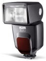

48 AF-1 Digital 最大闪光指数为48，可垂直(-7/+90°)和水平(300°)俯仰及摇摆灯头，闪光覆盖范围24-105mm。
日前托朋友从澳门买了一个美兹48AF-1，澳币1551元。上机试灯感觉不错，原来有一个佳能380的灯，两者相比差距甚微，美兹似乎稍亮一些，色温和原厂灯几乎没啥差别。按照说明说上写的就是不能被引闪，不知问题出现在哪个环节，恳请高手指点迷津。
带反光卡片，和广角集散片，左右可以旋转，曝光比较准确，回电时间很快。同样的电池在380上的需要三四十秒才能冲上电，在美兹灯上只需不到十秒就可充足电闪亮。
感觉热靴插脚不如佳能430设计得好，问题作为副灯被引闪，说明书看不明白。
尼康口同价位里秒杀SB-600
美兹以色温精准著称，德国制造，做工远胜于SB-600，指数也比600高。完全支持TTL和高速同步，可以被光引闪。可以通过换接口到其他品牌相机上。反光片和散射光片也集成上了。操作基本不用看说明书。通过USB可以升级固件
没有赠送支架和皮套很不厚道，原厂柔光罩180，国产的没有合适型号，我用佳能580柔光罩贴了俩创可贴正好。